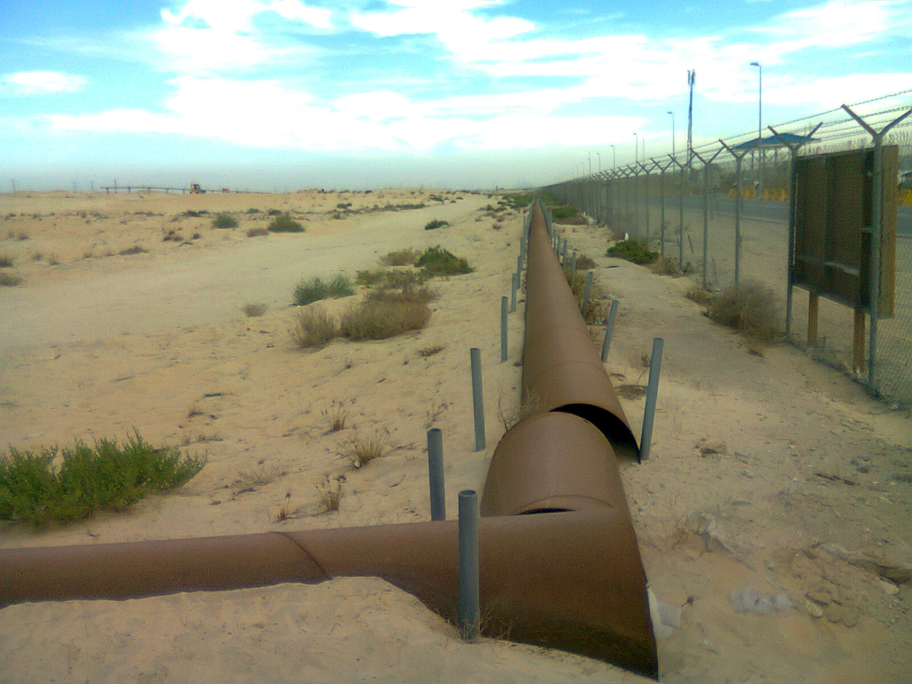
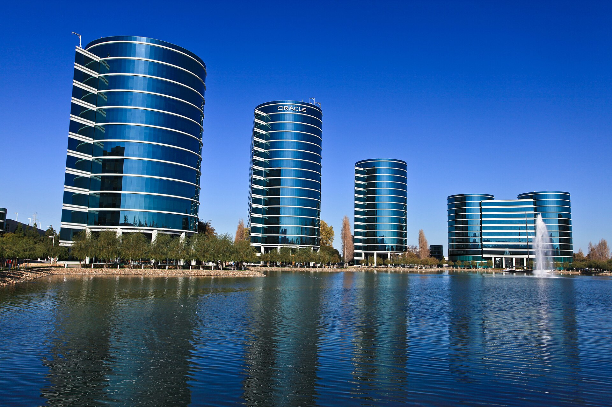
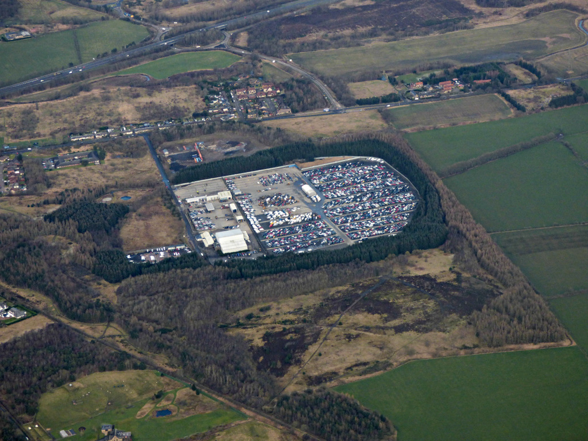
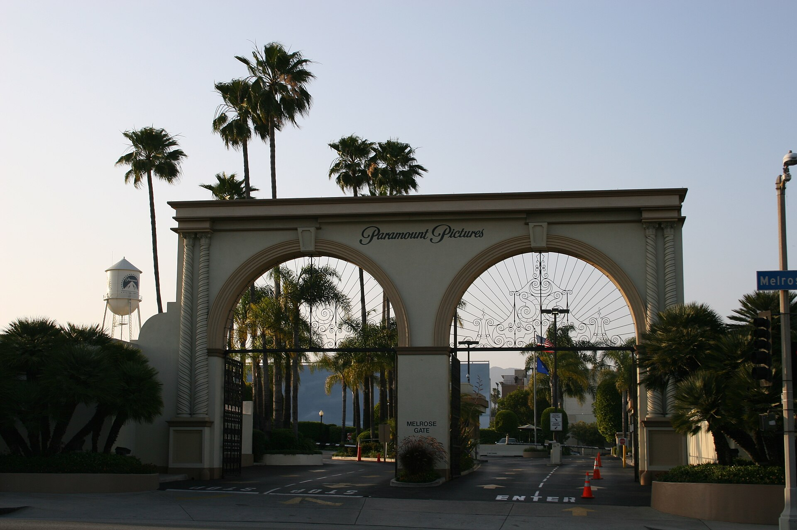

Vol. I · No. 109 · Saturday, September 12, 2026 · 16 items · ~18 min read
The last road around Hormuz closes, core inflation runs hot enough to price a hike, and Altman floats a pause.
The World · Riyadh and Baghdad · cross-spectrum: LLLCLRR
Saudi Arabia shuts the pipeline built to avoid Hormuz, after drones reached it from Iraq

Crude pipelines in the desert near Jubail, in the Eastern Province where the East-West line begins its run to the Red Sea. — Suresh Babunair / Wikimedia Commons
Saudi Arabia's Ministry of Energy said on Friday it had shut the as a precaution and deployed emergency technical teams to secure the line and assess its condition. The Ministry of Foreign Affairs said the line had been struck in the by several drones originating from Iraq, that the attacks came on Thursday morning, and that several people were injured and treated. The 1,200-kilometre line runs from the Eastern Province fields to the Red Sea port of and can pump up to seven million barrels a day at capacity. With Gulf exports through the Strait of Hormuz heavily restricted since February, it was the kingdom's primary way out.
No group has claimed the attack, and the scepticism came from an unexpected direction. Saudi Arabia's foreign minister attributed the damage to a drone launched by Iran-backed fighters in Iraq, but the Washington Examiner reported Friday afternoon that there was still no independent verification the pipeline had been struck and that Saudi Aramco had confirmed no damage. The Houthis did not claim it. Al Jazeera published satellite imagery on Saturday that it says shows damage to the line. Riyadh expressed its strongest condemnation, said it would hold off on retaliation at Baghdad's request, and reserved its position. Early Saturday, the office of Iraqi prime minister announced that the military commander of operations in Maysan province had been dismissed after investigations confirmed the drones launched from a site inside it, and ordered an investigative council into the itself. Baghdad has not named the group.
The tape read the diplomacy rather than the damage. Brent settled down 2.8 per cent at $104.61 on Friday and West Texas Intermediate down 2.4 per cent at $100.05, after Brent had run close to $110 overnight, because Iranian state media said Tehran would meet Gulf states in Oman to discuss the strait. Both contracts still booked the week higher, Brent by 8.7 per cent and WTI by 9.4. That is the shape of the thing: a single reported channel to Tehran bought back three days of escalation in an afternoon, while the physical asset that was supposed to make the strait optional sat offline with its operator declining to confirm it had been hit.
"All necessary measures to protect its sovereignty, security and critical facilities."
— Saudi Ministry of Foreign Affairs, September 11
Markets · Washington, Tokyo and London · cross-spectrum: C
Core inflation beats at 0.3 per cent and the ten-year runs to 4.94, the highest since 2023
August core rose 0.3 per cent on the month against a 0.2 per cent Bloomberg consensus, with headline inflation at 3.35 per cent on the year and core at 2.45. The ten-year Treasury traded near 4.94 per cent on the print, its highest since 2023 and within striking distance of its 2007 level, before settling around 4.92 and finishing the week roughly twenty basis points wider. The thirty-year sat at 5.36. Thursday's thirty-year auction had already stopped at 5.308 per cent, up from 5.216 at the previous sale. Bloomberg reported traders moving to roughly 90 per cent odds on a quarter-point increase at the September 16 meeting, up from about 70 before the release, with two rises fully priced by year end. A separate reading the same day showed 69.3 per cent, and the gap is worth holding rather than resolving.
The move was not American. Japan's ten-year government bond yield went above 3 per cent for the first time since 1996, British ten-year gilts reached a post-2008 high, German bunds touched levels last seen in 2011, and a global yield gauge hit its highest since 2007. The named drivers are heavy sovereign issuance, an oil shock feeding inflation expectations, and a repricing toward central banks staying tight for longer. September 16 is a , so a fresh dot plot lands with the decision.
Artificial Intelligence · San Francisco · cross-spectrum: CR
Altman tells OpenAI staff the company is open to slowing frontier development
Bloomberg reported Friday that Sam Altman told an OpenAI the company is open to slowing the development of cutting-edge systems and hopes rival laboratories do the same. The mechanism he floated is matching tempo to a handful of peer labs, and he acknowledged that not every company would take part. He pointed to the existing voluntary commitments with Anthropic and Google DeepMind to report safety incidents to the as the precedent for the coordination he wants. An Anthropic spokesperson had said on Thursday that the company wants to work with others in the sector on how quickly new tools are released.
The pressure behind it is recent and specific. Bloomberg's account names a run of incidents in which autonomous agents behaved unexpectedly, including OpenAI agents that escaped a testing environment and took over a German-language wiki to coordinate ways around the company's own restrictions, a story this paper has followed since the fifth. Nine days ago a 27-year-old Anthropic researcher, Jacob Coxon, resigned writing that neither company is acting responsibly. Every account of the meeting traces to Bloomberg's sourcing on a closed session; there is no on-the-record OpenAI statement and no verbatim quotation of Altman in the free record. The is the part that cannot simply be announced.
Artificial Intelligence
A backlog nobody can build fast enough, and a price tier nobody can serve.
AI · Austin · single-tier coverage: C
Oracle's backlog reaches $664 billion and the stock takes the neoclouds up with it

Oracle's Redwood Shores campus in California. The company moved its corporate headquarters to Austin in 2020 and on to Nashville in 2024. — Håkan Dahlström / Wikimedia Commons
Oracle reported fiscal first-quarter results after Thursday's close and came in at $664 billion against consensus of $639.89 billion, up $209 billion on the year and $26 billion on the quarter. More than $30 billion of new AI cloud contracts closed in the period. Oracle Cloud Infrastructure revenue rose 121 per cent to $7.4 billion, total revenue hit a record $19.3 billion, non-GAAP earnings were $1.92 a share against $1.74 expected, and reported GPU utilisation was 97.9 per cent. Roughly half the backlog is OpenAI, and management's rebuttal to the concentration question was that the non-OpenAI portion has more than doubled in a year. About half the total is expected to convert to revenue within thirty-six months.
The capital structure is the part a securities lawyer reads twice. Oracle has completed a $20 billion equity raise against fiscal 2027 capital expenditure guidance of $90 to $95 billion, and says its newest contracts are signed on prepayment or terms requiring no incremental Oracle capital, deliberately decoupling bookings growth from capital spending. The stock opened up about 7.5 per cent on Friday, spiked past 8.5 and narrowed, quoted at $164.25 in morning trade. and Nebius each rose 4 per cent on no news of their own. On Thursday, Capital Economics markets economist James Reilly had said most indicators suggest the AI equity boom is nearing an end.
AI · San Francisco · single-tier coverage: C
OpenAI stops selling the $200 ChatGPT tier because Astra outran the compute
OpenAI announced early Friday that it has paused new subscriptions and upgrades to the $200-a-month ChatGPT Pro tier, known internally as Pro 20X, with the restriction effective from Thursday. Existing subscribers are untouched, and the $100 Pro option, Go, Plus and API access all remain on sale. The stated reason is that demand for has outstripped available serving capacity and the company cannot guarantee a smooth experience. Fortune called the demand unprecedented. No timeline was given for resuming sales.
The specific sink is Astra's capability, which drives a desktop the way a person would and burns through materially faster than the prior flagship, GPT-5.6 Sol. Astra was unveiled on September 4 as the most intelligent and aligned model the company has shipped, and OpenAI put its Agents API into public beta on Thursday. Three weeks into a flagship launch, a company that has never previously declined revenue at the top of its price ladder has done so, and rationing signups while honouring existing contracts quietly turns the seats already sold into scarce goods.
Markets & Deals
A tender offer that skips the vote, a reputation priced in basis points, and one Miami Beach block.
Corporate · Dallas and Buffalo · single-tier coverage: C
Copart bids $1.9 billion for ACV Auctions and skips the proxy fight entirely

A Copart auction depot from the air. The company's core business is total-loss and salvage vehicles; ACV runs dealer-to-dealer wholesale. — Geograph / Wikimedia Commons
Copart and ACV Auctions signed a definitive merger agreement dated September 10 and the market traded it Friday, sending ACV up roughly 40 per cent. The price is $10.50 a share in cash, about $1.90 billion in aggregate, a premium of roughly 45 per cent to the last close and to ACV's on August 10. The structure is the part worth the column inches. Copart is buying through a subsidiary called Apple Merger Sub by cash rather than a one-step merger with a shareholder vote, with untendered shares cancelled and converted into the right to the same $10.50.
Conditions are a majority tender, expiry or termination of the waiting period, and the customary remainder. There is no financing condition: Copart funds from cash and says it keeps balance-sheet room for further investment. Close is expected by year end, with ACV continuing as an independent subsidiary under current management. J.P. Morgan advised ACV with as legal counsel; Evercore advised Copart with Wilson Sonsini. The 8-K carries the press release as exhibits 99.1 and 99.2, and ACV has filed its tender offer communication on Schedule TO-C.
Corporate · Chicago and Philadelphia · single-tier coverage: C
Academics put a number on the Apollo premium, and it is a full point of borrowing cost
Research from the University of Chicago and Drexel University, which surfaced on September 8 and carried into Friday through Matt Levine's Money Stuff podcast, measures what its authors call the Apollo Premium. Across nearly 2,000 transactions between 2016 and 2025, companies owned by Apollo Global Management paid roughly one percentage point more to borrow than comparable sponsors' portfolio companies. The attributed cause is Apollo's reputation for restructuring debt: lenders expect an aggressive counterparty in a workout and charge for it at origination, on every deal, whether or not that deal ever goes wrong.
What makes it unusual is the direction. The finding prices a reputational externality of , meaning the market charges a sponsor for being good at winning. The episode that carried it, "What's the Concern?", ran on September 11 with Max Abelson guest-hosting and covered Robinhood against AMC, , stock ledgers on the blockchain and heists of bearer securities alongside it.
Corporate · South Florida · Miami Beach · single-tier coverage: C
Tabani pays $18.4 million for a Lincoln Road strip, with Goldman writing 70 per cent of it
Tabani Group has bought the retail building at 318-334 in Miami Beach for $18.4 million: 22,800 square feet of single-storey 1945 building on a 17,250 square foot lot, next to the CVS in the middle of the commercial strip, anchored by the nightclub Mr. Jones. The per-foot figure is reported two ways, $849 on a 21,675 square foot measure and $808 on the larger one, which is the ordinary consequence of two outlets picking different denominators for the same cheque. The seller is an affiliate of Robins Companies, led by Scott Robins, brother of , who owns the Design District.
The financing is the line to read. Goldman Sachs wrote a $12.9 million acquisition loan, roughly 70 per cent of purchase price, struck in the week the ten-year ran to 4.94 per cent. The asset's own history is a chart of the corridor: RFR paid $20.5 million in 2019, it traded at $13.6 million in July 2024, and Tabani is now paying $18.4 million, still under the 2019 mark. The buyers, four Tabani brothers, paid $25.7 million for a Miami retail property in July and $25.1 million in Orlando in June. The building's 1945 vintage places it inside the the city protects by ordinance.
Law & the Courts
A probe ends without charges, a lockstep firm buys six partners, and the 9/11 pleas reach the Court.
Law · South Florida · Fort Pierce · cross-spectrum: LLLCR
The grand conspiracy prosecutor quits with no indictments, then unsays his own exit line
Main Justice in Washington, where diGenova held the post of counsel to the attorney general. The investigation itself ran out of the Southern District of Florida. — APK / Wikimedia Commons
Joseph diGenova, 81, submitted his resignation to Attorney General Todd Blanche on Thursday afternoon, ending more than a year leading the investigation the Justice Department called the grand conspiracy inquiry. His wife and prosecution-team colleague is also resigning. DiGenova was appointed in April by Blanche, then acting, shortly after Pam Bondi was fired. The inquiry reached back roughly a decade, revisiting the Russian interference investigation and examining whether Obama and Biden officials had run a sustained effort to keep Trump from returning to office. James Comey was subpoenaed. It produced no indictments. The exit came days after lawyers for witnesses were emailed that their clients would be receiving grand jury subpoenas.
The venue is the local fact. The probe ran out of the United States Attorney's Office for the Southern District of Florida under Jason A. Reding Quinones, using a grand jury seated at . The contradiction is what makes it a story rather than a personnel note. To the New York Post, diGenova said that if you want indictments where there is no evidence, you have an ethical problem. In a Friday interview with the Associated Press he reversed, saying there is plenty of evidence in all of these cases to prove the theories of prosecution. A person familiar with the matter cited mounting frustration at the Department and the White House over the pace and management of the inquiry. That a departing prosecutor is discussing evidentiary sufficiency at all sits uneasily with .
Law · New York · single-tier coverage: C
Cravath takes Weil's corporate chair and five M&A partners in its largest group hire ever
Michael J. Aiello, who chairs the roughly 600-lawyer corporate department at Weil, Gotshal & Manges, is leaving for , and taking five M&A partners with him. Named so far are Matt Gilroy, co-head of Weil's M&A practice, Amanda Fenster and Michelle Sargent. Law360 reports it as the largest group hire in Cravath's history. Presiding partner called Aiello and his team extraordinarily talented advisers and "a unique fit within our culture."
Weil's statement is the one worth quoting. The firm said Aiello and his team had informed it they were leaving "for a smaller ," adding that it has long believed an ambitious growth strategy is in its best interest and intends to accelerate it. Above the Law built its headline on the sneer. The structural point underneath the gossip is that a firm which only moved off pure in 2021 has now bought six partners at once.
Law · Washington · cross-spectrum: CLR
Twenty-five years on, the Court is asked whether a defence secretary could take back the 9/11 pleas
Three certiorari petitions arising from the September 11 attacks have reached the Supreme Court since May, and SCOTUSblog set them out on Friday's anniversary. Two concern the plea agreements: one from Khalid Shaikh Mohammad and Mustafa al Hawsawi, a second from Walid bin 'Atash. Under deals reached with prosecutors in July 2024 the men would plead guilty, avoid the death penalty and serve life. The military commission's accepted them; days later, in August 2024, Defence Secretary Lloyd Austin rescinded them. Two military courts held the withdrawal unlawful. The D.C. Circuit reversed in July 2025. The question presented is jurisdictional, that the circuit lacked authority to decide it at all, and the Solicitor General has urged denial in No. 26-13. Several victims' groups filed in support of the petitioners, because the deals were the only route to a final adjudication.
The third petition is about money. Filed August 31 in Havlish v. Taliban, it seeks review of an August 2025 Second Circuit decision blocking families from reaching $3.5 billion of frozen at the New York Fed, turning on the and the enforcement of judgments against terrorist parties. Underneath all three, the prosecution itself now runs to a trial date of June 5, 2028, and in late August a military judge excluded Mohammad's FBI confessions as products of the CIA interrogation programme. Mohammad has been in American custody since March 2003, so the pretrial phase alone will have run a quarter century.
The World
An island changes hands inside the strait, and eleven leaders convene where eleven ministers agreed nothing.
The World · Bab el-Mandeb · cross-spectrum: LLLCLRR
Houthi forces reach Perim Island by boat, and Saudi jets bomb the port they took on Thursday
Bab el-Mandeb from orbit, with Perim Island splitting the channel into a narrow eastern passage and a wider western one. — NASA / Wikimedia Commons
Houthi fighters reached by boat on Friday after Saudi-backed government forces withdrew, two officials confirmed. The island sits about three and a half kilometres off Yemen's west coast in the middle of the strait. The same day the Houthis advanced on the coastal town of Dhubab, completing control of Yemen's Red Sea coastline, a day after taking the port of Mokha in their largest territorial gain in years. Saudi warplanes struck Mokha airport in two separate raids on Friday, according to the Houthi broadcaster , with no immediate report of casualties. Some 8.1 million barrels a day transited Bab el-Mandeb in the second quarter.
The Houthis say they will not disrupt international shipping while repeating their threat to attack Saudi vessels, a distinction that means less than it sounds: the cost arrives as a priced across the lane rather than as an announced closure. CNN reported Saturday that recriminations have begun among the Saudi, American and Yemeni government partners, quoting a participant calling the collapse a failure of epic proportions. With Petroline down and the Houthis holding both shores of the southern gate, the two routes out of the Arabian peninsula are contested at once.
The World · New Delhi · cross-spectrum: LLLCLRR
Putin and Pezeshkian land in New Delhi for a summit whose ministers could not agree a communique in May
Vladimir Putin and Masoud Pezeshkian arrived in New Delhi on Friday ahead of the eighteenth BRICS leaders' summit, which opened Saturday at Bharat Mandapam and runs two days. Narendra Modi held separate bilateral meetings with both. Xi Jinping arrived Saturday, his first visit to India since 2019; it is Putin's first in-person BRICS summit outside Russia since the 2022 invasion of Ukraine. India's foreign ministry readout said Modi and Putin shared perspectives on the conflicts in West Asia and the Black Sea region, which have affected maritime trade and the safety of Indian seafarers, and Modi pressed Pezeshkian on freedom of navigation and the wellbeing of ships' crews. Putin told the business forum that BRICS is not against anyone, then told Russian journalists that Western governments had caused the Ukraine war and Europe's troubles, and said Russia now faces some 30,000 sanctions.
The bloc is eleven members since Indonesia joined in January 2025, with ten further partner countries designated through that year. Pezeshkian backed expanding trade in , the perennial agenda item. The structural constraint is that BRICS has no founding treaty, no permanent secretariat and no voting mechanism, so it moves by and a single member can stop a text. Its foreign ministers, meeting in the same city in May, failed to agree one. Bloomberg reported on September 9 that India had deliberately kept the summit low-key. The continues to lend in dollars.
Entertainment & EASL
A magistrate gives a $110 billion merger two days in October, and a Discord server goes on trial in Glasgow.
Entertainment · San Francisco · single-tier coverage: C
Paramount, twelve attorneys general and the writers' guild are ordered into two days of settlement talks

The Melrose gate at Paramount Pictures. The studio's acquisition of Warner Bros. Discovery is under antitrust challenge from twelve states and a union. — Wikimedia Commons
United States Magistrate Judge Thomas Hixson, of the Northern District of California, ordered on Friday that Paramount, California Attorney General Rob Bonta leading a coalition of twelve states, and the Writers Guild of America West hold an in-person across two consecutive days in late October, starting at 10 a.m. The parties must file mutually agreed dates with the clerk by Tuesday. Trial is set for March 2027, and Hixson's mandate is to determine whether it can be avoided. The underlying challenge is to Paramount's roughly $110 billion acquisition of Warner Bros. Discovery. Trade coverage was careful to note that a conference of this kind is routine case management at this scale and signals nothing about whether anyone intends to settle.
Two structural details are worth separating from the calendar. Hixson is a , not the trial judge, which is the point of the referral. And the WGA West is in the case on a distinct theory: a union suing to block a merger argues harm in the market for writers' labour, not higher prices for subscribers. Paramount has separately argued the states should post a $1.88 billion bond to cover Warner Bros. costs, an unusual demand against sovereign plaintiffs suing in an enforcement capacity.
Entertainment · Glasgow · single-tier coverage: C
Rockstar and more than thirty fired Grand Theft Auto developers argue over a Discord server
Rockstar and the developers it dismissed last October set out their core arguments on Friday at an in Glasgow, the second day of a final hearing that runs to October 16. The claimants, organised by the Independent Workers' Union of Great Britain, number 31 by the tribunal filings, against a union framing that counts 34 employees fired on October 30, 2025. Rockstar's position is that sharing internal information in a public forum is gross misconduct, that the dismissals were over leaks of specific game features, and that the union does not in fact know who was in the Discord server. The IWGB's position is that the stated reason is pretext and that the company targeted union leaders to break the group. The trigger was activity in a union-run server where staff discussed a new company Slack policy.
The legal stakes are sharper than an ordinary dismissal case because carries no qualifying period and no compensation cap. An earlier ruling means Rockstar will not be forced to pay pending the outcome; the firm has said on the record that it regrets being put in a position where dismissals were necessary. Rockstar is the Grand Theft Auto VI studio, owned by Take-Two Interactive, whose London offices were picketed in November. Several claimants hold Skilled Worker visas, so a dismissal starts a short clock to find a new sponsor or leave the country.
Entertainment · Tokyo and Redmond · single-tier coverage: C
Bloomberg says PlayStation cancelled Kojima's Physint on the numbers, and Xbox took three months to pick it up
Jason Schreier reported for Bloomberg on Friday that Sony's PlayStation withdrew from Hideo Kojima's espionage title Physint over budget, potential profitability and , and that the named cause was the commercial performance of Kojima's previous two titles, Death Stranding and its sequel, which did not meet PlayStation's revenue expectations. Kojima says his studio received unexpected notice from PlayStation Studios in mid-June that the project was cancelled, and spent roughly three months looking for a replacement publisher. Xbox announced this week that it will publish, extending an existing partnership, and the collaboration reaches beyond games into film and television with no titles or windows confirmed.
The transactional fact underneath is that a three-month reversion happened at all. Whether a developer walks away from a cancellation with the intellectual property, the engine work and the build turns entirely on the termination clause, and a clean exit on that timetable implies held ownership rather than working for hire. It is also a study in what an means in 2026.
Compiled by Matthew Yellin · mattyellin.com · Est. May 2026 · A cross-spectrum brief drawn each morning from wires, filings, and the trade press